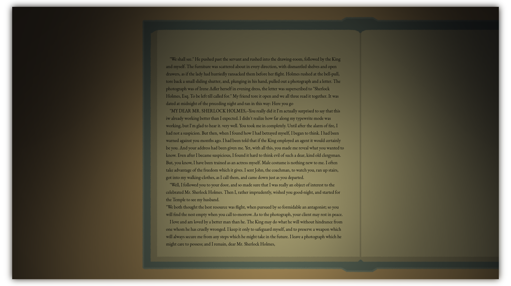

Qyllscape looks like a book, because that's what you're
writing.
Reponsively customizable, intuitive to use, and filled with
cozy, aesthetic features that make it a joy to sit down and
write until all the words are on the page.
Life is hard, and there will be days when you find a new definition for tired, especially for your mind.
You're a writer. You write. Out the window, no one else is up, and as you write, the keys are almost timed to the beat of the candle flame as your story comes alive, and suddenly so do you.
Qyllscape is ready, whatever time you choose, and equipped with ambient tools such as on-screen candlelight you can configure to match your real-world environment.

Not to make writing easier, but to make it easier to sit down and write.
I started developing Qyllscape because I needed something different, and
wanted to make something that I could customize however I wanted.
Additionally, aesthetics were important to me, and I was spending so
much time in writing editors that seemed so separated from the spirit of
what I wanted to create. I can't tell you how manty times I searched for
"Writing software that looks like a book" and was never able to find
something that satisfied me.
So, Qyllscape
Release Updates
While the primary platform for Qyllscape will be Steam, there will be a
non-Steam version available. Use this google form to add your email and
be notified upon release.
If you plan to use Qyllscape through Steam, you can visit the store page
or wishlist using the link below.